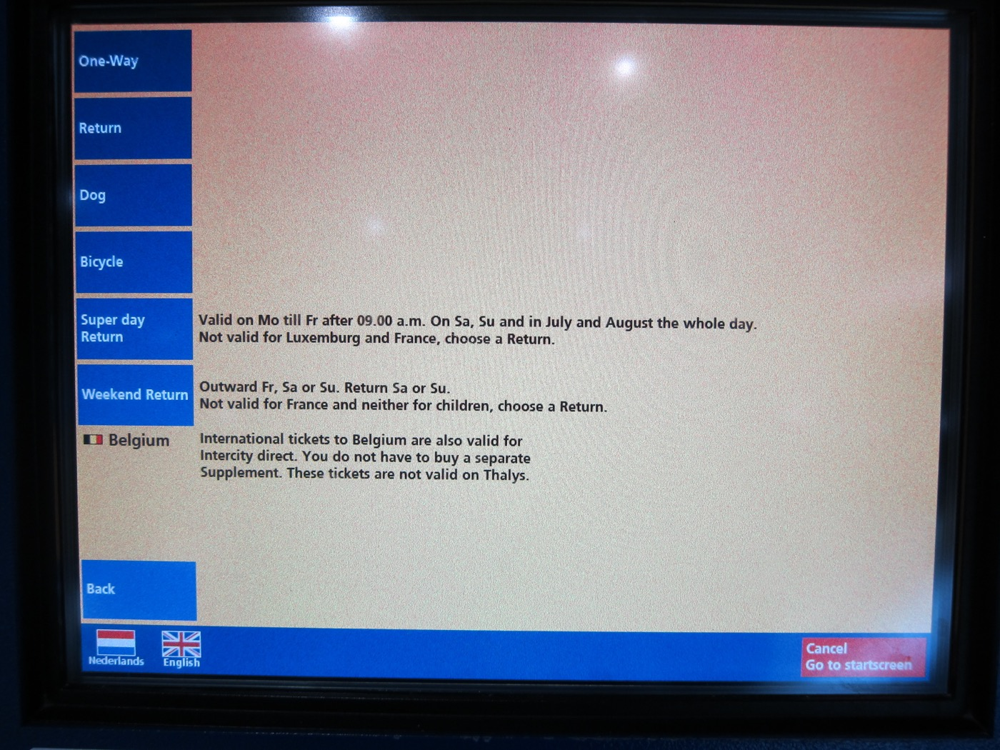

The Netherlands has some international rail links. Railway is important to the Netherlands, and the Netherlands has a good and functional rail network. Nonetheless, given that the Netherlands shares land border with only two countries, and that the North Sea sea–rail connection is much less popular now than it was in the steam era, the Netherlands' role as an international rail hub is not as prominent as it was in the past. (The sea–rail connection between England and Germany via the Netherlands can still be done, albeit with more train-transfers in the Netherlands.) Brussels and German cities like Düsseldorf and Cologne are more important international rail-hubs than the cities in the Netherlands. The following are lists of direct international passenger rail services to/from the Netherlands.
Long-distance international rail services
There are direct long-distance international rail services to Germany and beyond, and to Belgium and beyond. See timetables from NS International, or printed timetables from NS.
Trains to Germany and beyond:
Intercity Berlin: Amsterdam Centraal – Hilversum – Amersfoort – Apeldoorn – Deventer – Almelo – Hengelo –[border]– Bad Bentheim – Rheine – Osnabrück Hbf – [Bad Oeynhausen or Bünde (Westfalen)] – Minden (Westfalen) – Hannover Hbf – Wolfsburg Hbf – Stendal – Berlin-Spandau – Berlin Hbf – Berlin Ostbahnhof. Locomotive and crew change at Bad Bentheim. Usually 7 times per day. (Hbf: Hauptbahnhof 'main station'.)
ICE International (high-speed): Amsterdam Centraal – Utrecht Centraal – Arnhem Centraal –[border]– Oberhausen Hbf – Duisburg Hbf – Düsseldorf Hbf – Köln Hbf – Frankfurt (Main) Flughafen Fernbahnhof ✈ – Frankfurt (Main) Hbf. Usually 6 or 7 times per day. (Köln is Cologne).
Night trains: there are no international night trains to/from the Netherlands. There are easy connections to night trains departing/arriving in nearby countries, e.g.: ÖBB (Austrian Rail) Nightjet between Düsseldorf/Hamburg and Vienna/Innsbruck; Thello between Paris-Gare de Lyon and Venice-Santa Lucia; SNCF INTERCITÉS de nuit between Paris-Austerlitz and various southern destinations.
Trains to Belgium and beyond:
Intercity Brussels: Amsterdam Centraal – Schiphol Airport ✈ – Den Haag Hollands Spoor – Rotterdam Centraal – Dordrecht – Roosendaal –[border]– Antwerpen-Centraal – Antwerpen-Berchem – Mechelen – Brussels Airport-Zaventem ✈ – Brussel-Noord/Bruxelles-Nord – Brussel-Centraal/Bruxelles-Central – Brussel-Zuid/Bruxelles-Midi. 16 times per day. (Antwerpen is Antwerp; Brussel in Dutch and Bruxelles in French is Brussels.)
Thalys (high-speed): Amsterdam Centraal – Schiphol Airport ✈ – Rotterdam Centraal –[border]– Antwerpen Centraal – Brussel Zuid/Bruxelles-Midi –[border]– [Paris-Nord or Lille-Europe]. More than 10 times per day to Paris-Nord. 2 times per day to Lille-Europe. During summer, there are weekly direct trains to Marseille-Saint-Charles on the southern coast of France. During winter, there are weekly direct trains to Bourg-Saint-Maurice in the French Alps.
At Brussel-Zuid/Bruxelles-Midi (Brussels South), you can catch the Eurostar to Lille-Europe, Calais-Fréthun, Ashford International, Ebbsfleet International, and London Saint Pancras International. There are separate check-in terminals and carriages for passengers to France versus Britain. For passengers to Britain, Belgian and British immigration checks are perforemd at Brussels South (passengers can be stopped again in Britain for customs checks).
Also at Brussel-Zuid/Bruxelles-Midi, there are direct TGV (French high speed) services to Lille-Europe, Aéroport Charles-de-Gaulle 2 TGV ✈ (for Paris Charles de Gaulle Airport CDG), and beyond. There is also IZY, which is a low-cost Thalys service between Brussel-Zuid/Bruxelles-Midi and Paris-Nord. For Luxembourg, it is better to change at Brussel-Noord/Bruxelles-Nord (Brussels North).
With a (non-Thalys) Dutch train ticket to Belgium or beyond, passengers can travel on the Intercity direct between Schiphol Airport and Rotterdam Centraal without the Intercity direct supplement (the NS ticket machine says so; but check again what the machine says when you purchase your ticket).
There are no longer car-trains (motorail) to/from the Netherlands. ÖBB Nightjet between Düsseldorf/Hamburg and Vienna/Innsbruck takes cars and motorcycles. There are also seasonal motorail between Düsseldorf and Verona, and beetween Düsseldorf and Livorno. There are also autotrains departing from Paris-Bercy with SNCF. In the vicinity, there is the Eurotunnel Le Shuttle (car shuttle train) across the English Channel.
Regional/short-distance international train services
There are some regional/short-distance trains that cross the Dutch-German or the Dutch-Belgian border. See timetables from NS International, or the printed time tables from NS.
Across the Dutch-German border (from north to south):
Arriva: Groningen – Groningen Europapark – Kropswolde – Martenshoek – Hoogezand-Sappemeer – Sappemeer Oost – Zuidbroek – Scheemda – Winschoten – Bad Nieuweschans –[border]– Weener – Leer (Ostfriesland). (NB: the German railway bridge near Weener collapsed in late 2015; replacement bus between Weener and Leer. Alternatively, catch the two-hourly direct bus between Groningen and Leer. See this.)
DB Regio NRW RB64: Enschede – Enschede De Eschmarke – Glanerbrug –[border]– Gronau (Westfalen) – Ochtrup – Metelen Land – Steinfurt-Burgsteinfurt – Steinfurt-Grottenkamp – Steinfurt-Borghorst – Nordwalde – Altenberge – Münster-Häger – Münster Zentrum Nord – Münster (Westfalen) Hbf. Printed timetables.
DB Regio NRW RE18: Heerlen – Landgraaf – Eygelshoven Markt –[border]– Herzogenrath. Printed timetables (see the bottom right corner of the second page). From Herzogenrath, you can easily change to a train south to Aachen, or RE4 north to Mönchengladbach Hbf, Düsseldorf Hbf, and Dortmund Hbf.
Across the Dutch-Belgian border (from east to west):
NMBS/SNCB Line 40: Maastricht – Maastricht Randwyck – Eijsden –[border]– Visé – Bressoux – Liège-Guillemins, and on weekdays further to Hasselt. Printed timetables: Line 40. (Nb: in Dutch, Visé is Wezet, and Liège is Luik.) At Liège-Guillemins, you can change to a direct train east to Aachen (Germany), west to Brussels, or a scenic/slow two-hourly all-stop train south to Luxembourg City.
NMBS/SNCB Line 12: Roosendaal –[border]– Essen – Wildert – Kalmthout – Kijkuit – Heide – Kapellen – Sint-Mariaburg – Ekeren – Antwerpen-Noorderdokken – Antwerpen-Luchtbal – Antwerpen-Centraal – Antwerpen-Berchem – Antwerpen-Zuid, then to Puurs on weekdays, or to Lokeren on weekends. Printed timetables: Line 12.
For destinations in (only) Belgium, there is a Super-dagretour 'Super day Return' ticket . It is valid after 9 am on Monday to Friday, the entire day on Saturday, Sunday, and the entirety of July and August. For destinations in (only) Belgium and Luxembourg, there is a Weekend-retour 'Weekend Return' ticket: leaving the Netherlands on Friday, Saturday, or Sunday, and returning on Saturday or Sunday (this ticket is not available to children). Otherwise, if you travel internationally frequently by ordinary train, and if you have a subscription with NS (or similar subscriptions with railway companies in many other European countries), then getting RailPlus (press the 'RailPlus' tab in that page) could be advantageous.
What the ticket machine says about the Super day Return and the Weekend Return tickets. 
It is best to get international train tickets online through the websites of the national railway companies. In some countries there are dedicated websites for international train travels, e.g. NS International in the Netherlands. A great number of train ticket machines in the Netherlands can issue tickets to Belgium (including Lille in France), Luxembourg, and many train stations in Germany (mostly the ones closer to the Dutch border, and certain bigger ones further away like Hamburg, Hannover, Frankfurt, and Berlin). Ticket counters at larger train stations can probably deal with train tickets to Belgium and Luxembourg, and perhaps Germany (i.e. basically the same destinations as the ones you can buy from a machine). Dedicated international train ticket counters can handle the full range of international train tickets, but they are found in only seven train stations in the Netherlands. In addition, getting tickets through ticket counters incur an extra service charge, and that can be hefty.
A smaller station with dedicated international ticket counter (counter number 3). There is also a public computer where you can use to buy an international ticket yourself (it accepts only certain credit cards).
There are other railways from the Netherlands to Germany or Belgium, but they are only used by freight trains, or in limited cases, tourist trains.
On Belgian trains: folded folding bicycles can be taken for free, otherwise a bicycle ticket is €5 one-way, or €8 for the entire day in the entire Belgian rail network.
Germany: you have to check with the individual public transport providers... in general, the word to search for in their websites is Fahrradmitnahme, or just Fahrrad 'bicycle'. With DB, this is their page on Bahn und Fahrrad 'Train and bicycle'. With long-distance trains, it is 'generally not possible' on ICE, and possible on IC and EC trains (with a bicycle ticket, on domestic trains). For regional/short-distance trains (IRE, RE, RB, S-bahn), it is different in different states...